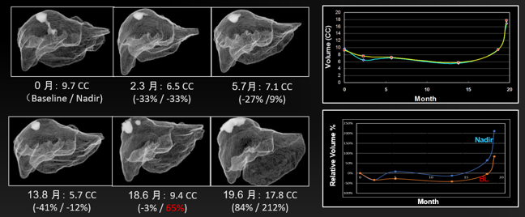

Iterative mesh transformation for 3D segmentation of livers with cancers in CT images
We developed a multi-resolution mesh segmentation algorithm for 3D segmentation of livers, called iterative mesh transformation that deforms the mesh of a region-of-interest (ROI) in a progressive manner by iterations between mesh transformation and contour optimization.
Lu, D., Wu, Y., Harris, G. and Cai, W., 2015. Iterative mesh transformation for 3D segmentation of livers with cancers in CT images. Computerized Medical Imaging and Graphics, 43, pp.1-14.
Liver and liver tumor volumetrics in CT and MRI
We developed semi-automated liver and liver tumor segmentation algorithms for computer-aided assessment of cancer therapy.
Three Dimensional Liver Volumetrics in Hepatic CT Images Using Dynamic-thresholding Level Set Method
A novel CT based volumetric biomarker for assessing response to therapy in Hepatocellular carcinomas

Cai, W, Harris, G, Yoshida, H, Three Dimensional Liver Volumetrics in Hepatic CT Images Using Dynamic-thresholding Level Set Method. Radiological Society of North America 2006 Scientific Assembly and Annual Meeting, November 26 - December 1, 2006 ,Chicago IL. http://archive.rsna.org/2006/4436295.html Accessed March 11, 2021
Singh et al. RSNA 2009
Evaluation of tumor response by quantifying viable and necrotic tumor regions in HCC lesions using multi-phase MDCT images
Cai et al. RSNA. 2015; Hong et al. RSNA 2016; Fang et al. RSNA 2017